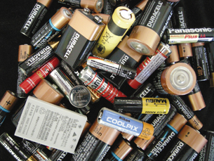

Module 4—Batteries and Balance
Lesson 2—Design of Commercial Cells
 Get Focused
Get Focused

Wow! There are a lot of different kinds of commercial electric cells available. Some cells, like a 9-volt cell, are unique because of their high voltage. But most of the cells you purchase have a voltage of 1.5 V. In addition to voltage, there are cells made with alkaline, rechargable, lithium ion, and metal hydride components.
In this lesson, you will investigate the construction of different types of commercial electric cells and other kinds of cells used commercially. As you proceed through this lesson, you will further consider the environmental impact of your personal use of commercial electric cells. You will collect information about how substances from discarded cells might enter the environment, and you will also collect information about mechanisms that can be used to reduce the quantity of material from these cells that goes into landfills.
Consider the following question as you complete Lesson 2:
- How do you determine the cell potential for a voltaic cell?
 Module 4: Lesson 2 Assignment
Module 4: Lesson 2 Assignment
In the Lesson 2 Assignment you will complete the investigation “Building Voltaic Cells.” Download a copy of the Module 4: Lesson 2 Assignment to your computer now. You will receive further instructions on how to complete this assignment later in the lesson.
You must decide what to do with the questions that are not marked by the teacher.
Remember that these questions provide you with the practice and feedback that you need to successfully complete this course. You should respond to all the questions and place those answers in your course folder.